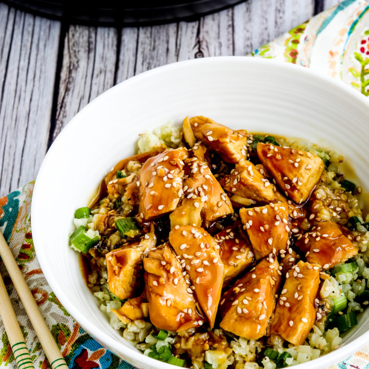

Instant Pot Teriyaki Chicken

Description
Cooked from frozen chicken breast. Easy for weekday dinners where you're
short on time.
Ingredients
- ½ cup soy sauce
- ½ cup wate
- ½ cup brown sugar
- 2 tablespoons rice wine vinegar
- 1 tablespoon mirin (Japanese sweet wine)
- 1 tablespoon sake
- 1 tablespoon minced garlic
- 1 dash freshly cracked black pepper
- 1 pound skinless, boneless chicken breast halves
Steps
-
Mix soy sauce, water, brown sugar, rice wine vinegar, mirin, sake,
garlic, and pepper in a bowl to make a sauce.
-
Place chicken in an electric pressure cooker (such as Instant Pot®).
Pour sauce over chicken. Close and lock the lid. Select Meat function;
set timer for 12 minutes. Allow 10 to 15 minutes for pressure to build.
-
Release pressure carefully using the quick-release method according to
manufacturer's instructions, about 5 minutes. Unlock and remove lid. An
instant-read thermometer inserted into the center of the chicken should
read at least 165 degrees F (74 degrees C); if not, cook chicken for
another 2 to 4 minutes.
-
Remove chicken from the pot and cut up or shred. Mix with the sauce from
the pot.
Nutrition Facts
Per Serving: 259 calories; protein 24.3g; carbohydrates
33.1g; fat 2.3g; cholesterol 58.5mg; sodium 2009.3mg.